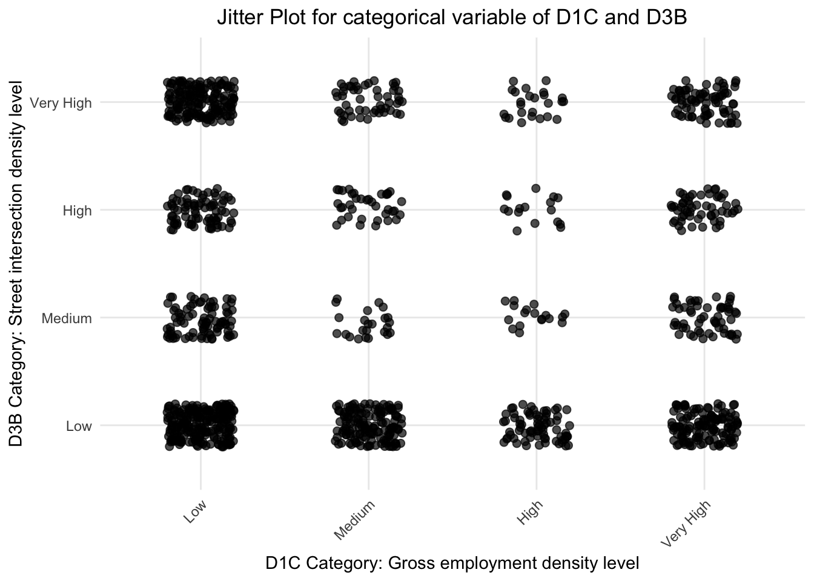

Code
# Load necessary libraries
library(ggplot2)
library(corrplot)
library(dplyr)
library(ggridges)
library(patchwork)
library(reshape2)
library(GGally)
library(tidyr)
library(plotly)
library(sf)
library(shiny)# Load necessary libraries
library(ggplot2)
library(corrplot)
library(dplyr)
library(ggridges)
library(patchwork)
library(reshape2)
library(GGally)
library(tidyr)
library(plotly)
library(sf)
library(shiny)# Load the dataset
data <- read.csv("SLD_new.csv")
data <- data |>
mutate(D4A = ifelse(D4A < 0, 0, D4A))
summary(data) X GEOID geometry P_WrkAge
Min. : 963 Min. :3.606e+11 Length:1292 Min. :0.0000
1st Qu.: 4460 1st Qu.:3.606e+11 Class :character 1st Qu.:0.5800
Median : 6026 Median :3.606e+11 Mode :character Median :0.6645
Mean : 7449 Mean :3.606e+11 Mean :0.6351
3rd Qu.: 8733 3rd Qu.:3.606e+11 3rd Qu.:0.7566
Max. :15855 Max. :3.606e+11 Max. :1.0000
Pct_AO1 R_HiWageWk D1B D1C
Min. :0.00000 Min. : 0.0 Min. : 0.0 Min. : 0.00
1st Qu.:0.09666 1st Qu.: 276.8 1st Qu.:103.6 1st Qu.: 16.28
Median :0.18300 Median : 400.3 Median :158.0 Median : 50.12
Mean :0.19174 Mean : 427.6 Mean :169.7 Mean : 141.03
3rd Qu.:0.26712 3rd Qu.: 543.0 3rd Qu.:232.5 3rd Qu.: 118.06
Max. :0.70000 Max. :4653.0 Max. :766.5 Max. :2415.01
D3A D3AMM D3APO D3B
Min. : 0.00 Min. : 0.000 Min. : 0.000 Min. : 0.00
1st Qu.: 22.03 1st Qu.: 8.579 1st Qu.: 0.000 1st Qu.: 0.00
Median : 29.70 Median :18.472 Median : 4.791 Median : 55.07
Mean : 30.13 Mean :17.622 Mean : 8.538 Mean : 93.06
3rd Qu.: 38.11 3rd Qu.:25.904 3rd Qu.: 12.593 3rd Qu.: 131.16
Max. :152.72 Max. :51.962 Max. :121.290 Max. :5289.52
D4A D5AR D5CRI
Min. : 0.0 Min. : 0 Min. :0.0000
1st Qu.: 68.9 1st Qu.: 659583 1st Qu.:0.5426
Median : 165.0 Median : 739789 Median :0.6079
Mean : 151.7 Mean : 707576 Mean :0.5911
3rd Qu.: 224.6 3rd Qu.: 818866 3rd Qu.:0.6745
Max. :1064.8 Max. :1220602 Max. :1.0000 num_variables <- c(
"P_WrkAge", "Pct_AO1", "R_HiWageWk",
"D1B",
"D3A", "D3AMM", "D3APO",
"D4A",
"D5AR",
"D5CRI","D1C", "D3B"
)
selected_data <- data[num_variables]
data_long <- selected_data |>
pivot_longer(cols = everything(), names_to = "Variable", values_to = "Value")
# Histograms with free x and y scales
ggplot(data_long, aes(x = Value)) +
geom_histogram(aes(y = ..density..), bins = 30, fill = "skyblue", color = "black", alpha = 0.7) +
facet_wrap(~ Variable, scales = "free") + # Allow both x and y axes to vary
labs(
title = "Histogram with Density Line for Numerical Variables",
x = "Value",
y = "Density"
) +
theme_minimal() +
theme(
axis.text.x = element_text(angle = 45, hjust = 1) # Rotate x-axis labels
)Warning: The dot-dot notation (`..density..`) was deprecated in ggplot2 3.4.0.
ℹ Please use `after_stat(density)` instead.
D1C (Gross Employment Density):
The histogram shows a heavily right-skewed distribution with a large concentration of values near zero and only a few observations at higher values. This uneven distribution suggests that employment density can be categorized into groups such as “low,” “medium,” and “high” rather than treated as a continuous variable for easier interpretation and analysis.
D3B (Street Intersection Density):
Similar to D1C, the histogram is right-skewed, with most values clustered near the lower end and a long tail of higher values. The nature of street intersection density makes it meaningful to group the values into categories like “low,” “medium,” “high,” and “very high” to reflect differences in urban planning and infrastructure.
Therefore, we choose to convert this two variables to categorical variables
# Transform D1C and D3B to categorical data
data_categorical <- data |>
mutate(
D1C_Cat = cut(D1C, breaks = c(-Inf, 40, 80, 120, Inf), labels = c("Low", "Medium", "High", "Very High")),
D3B_Cat = cut(D3B, breaks = c(-Inf, 40, 80, 130, Inf), labels = c("Low", "Medium", "High", "Very High"))
)
#write.csv(data_categorical, "data_new.csv")
#head(data_categorical)num_variables <- c(
"P_WrkAge", "Pct_AO1", "R_HiWageWk",
"D1B",
"D3A", "D3AMM", "D3APO",
"D4A",
"D5AR",
"D5CRI"
)
selected_data <- data[num_variables]
data_long <- selected_data |>
pivot_longer(cols = everything(), names_to = "Variable", values_to = "Value")
# histograms
ggplot(data_long, aes(x = Value)) +
geom_histogram(aes(y = ..density..), bins = 30, fill = "skyblue", color = "black", alpha = 0.7) +
facet_wrap(~ Variable, scales = "free") +
labs(title = "Histogram with Density Line for Numerical Variables",
x = "Value", y = "Density") +
theme_minimal() +
theme(
axis.text.x = element_text(angle = 45, hjust = 1) )
D1B (Gross population density)
D3A (Total road network density)
D3AMM (Multi-modal network density)
D3APO (Pedestrian-oriented network density)
D4A (Distance to nearest transit stop)
D5AR (Jobs within 45 minutes auto travel time)
D5CRI (Regional Centrality Index)
P_WrkAge (Percent of working-age population)
Pct_AO1 (Percent of one-car households)
R_HiWageWk (Count of high-wage workers earning $3,333/month or more)
The histogram plot provides a visual overview of the distributions for several numerical variables.
D1B (Gross population density) and D3A (Total road network density) show right-skewed distributions, with most areas concentrated at lower values and a few with much higher densities. D3AMM (Multi-modal network density) and D3APO (Pedestrian-oriented network density) are also right-skewed, suggesting limited infrastructure in many regions in Mahattan.
D4A (Distance to nearest transit stop) exhibits a sharp peak at lower values, indicating many areas are close to transit stops, while some are much farther.
D5AR (Jobs within 45 minutes auto travel time) and D5CRI (Regional Centrality Index) show near-normal distributions, suggesting these metrics are relatively evenly distributed across regions.
P_WrkAge (Percent of working-age population) displays a normal distribution distribution with many zeros, indicating consistency in the working-age population. Pct_AO1 (Percent of one-car households) shows a right-skewed pattern, highlighting a concentration of areas with fewer one-car households.
Finally, R_HiWageWk (Count of high-wage workers) is highly right skewed, with most areas having fewer high-wage workers and only a small fraction with significantly higher counts.
# ridgeline plot
data_long <- data_long |>
group_by(Variable) |>
mutate(Value_scaled = (Value - min(Value, na.rm = TRUE)) /
(max(Value, na.rm = TRUE) - min(Value, na.rm = TRUE))) |>
ungroup()
medians <- data_long |>
group_by(Variable) |>
summarize(median_value = median(Value, na.rm = TRUE)) |>
arrange(desc(median_value))
data_long$Variable <- factor(data_long$Variable, levels = rev(medians$Variable))
data_long <- data_long |>
filter(Value_scaled >= 0)
medians <- data_long |>
group_by(Variable) |>
summarize(median_value = median(Value_scaled, na.rm = TRUE)) |>
arrange(desc(median_value))
data_long$Variable <- factor(data_long$Variable, levels = rev(medians$Variable))
ggplot(data_long, aes(x = Value_scaled, y = Variable)) +
geom_density_ridges(
fill = "skyblue", alpha = 0.7, scale = 0.9, rel_min_height = 0.01
) +
labs(
title = "Ridgeline Plot for Numerical Variables Ordered by Median (Scaled Values)",
x = "Scaled Value",
y = "Variable"
) +
xlim(0, 1) + # Ensure the x-axis starts at 0
theme_minimal() +
theme(
legend.position = "none",
axis.text.y = element_text(size = 10),
plot.title = element_text(size = 12, face = "bold")
)Picking joint bandwidth of 0.0248
The ridgeline plot shows the distribution of scaled values (0–1) for various numerical variables, ordered by their highest median values to lowest median values .
P_WrkAge (Percent of working-age population) has the highest median and displays a centered distribution, indicating most areas have a significant working-age population.
D5CRI (Regional Centrality Index) and D5AR (Jobs within 45 minutes auto travel time) both have high medians and fairly centralized distributions, reflecting their importance in accessibility and centrality. D3AMM (Multi-modal network density) and Pct_AO1 (Percent of one-car households) show moderately spread distributions, indicating diversity across regions in infrastructure and household car usage.
D1B (Gross population density), D3A (Total road network density), and D4A (Distance to nearest transit stop) have lower medians, showing skewed distributions where certain regions dominate in these metrics.
R_HiWageWk (Count of high-wage workers) and D3APO (Pedestrian-oriented network density) have the lowest medians, with highly skewed distributions highlighting their sparsity or concentration in specific areas.
data_cat_freq <- data_categorical |>
count(D1C_Cat, name = "Freq_D1C")
data_cat_freq2 <- data_categorical |>
count(D3B_Cat, name = "Freq_D3B")
p1 <- data_cat_freq |>
group_by(D1C_Cat) |>
summarize(Count = sum(Freq_D1C)) |>
ungroup() |>
ggplot(aes(D1C_Cat, Count)) +
labs(
title = " Bar plot for D1C(Gross employment level)"
) +
geom_col(color = "grey50", fill = "lightblue") +
theme_minimal(base_size = 10) +
theme(
plot.title = element_text(size = 10, face = "bold")
)
p2 <- data_cat_freq2 |>
group_by(D3B_Cat) |>
summarize(Count = sum(Freq_D3B)) |>
ungroup() |>
ggplot(aes(D3B_Cat, Count)) +
labs(
title = "Bar plot for D3B(Street intersection density)"
) +
geom_col(color = "grey50", fill = "lightblue") +
theme_minimal(base_size = 10) +
theme(
plot.title = element_text(size = 10, face = "bold")
)
p1 | p2
Both variables show the Low level have the highest frequency, indicating that a significant proportion of observations have low values for both D1C_Cat(Gross employment level) and D3B_Cat(Street intersection density).
However, the distribution of D1C_Cat and D3B_Cat show a sharp decline in frequencies for medium and high level.
# Add jitter plot
ggplot(data_categorical, aes(x = D1C_Cat, y = D3B_Cat)) +
geom_jitter(width = 0.2, height = 0.2, size = 2, alpha = 0.7) +
theme_minimal() +
labs(
title = "Jitter Plot for categorical variable of D1C and D3B",
x = "D1C Category: Gross employment density level",
y = "D3B Category: Street intersection density level"
) +
theme(
axis.text.x = element_text(angle = 45, hjust = 1),
plot.title = element_text(hjust = 0.5)
)
This jitter plot compares D1C (Gross employment density levels) with D3B (Street intersection density levels) by categorizing each variable into four levels: Low, Medium, High, and Very High.
The plot shows that there is a clear clustering within each combination of categories, with Low D1C and Low D3B showing a tight grouping of points, showing that many areas fall into this category. Similarly, Very High D1C and Very High D3B also have a dense cluster, suggesting that regions with high employment density tend to align with higher street intersection density.
However, the spread of points increases for Medium and High categories, indicating greater variability or inconsistency in these regions. This implies a potential correlation between employment density and street intersection density, but variability exists in intermediate categories.
We randomly select 200 sample and do parallel coordinate plot because original dataset is too large and it’s hard to see the pattern for parallel coordinate plot.
set.seed(123)
sampled_data <- data_categorical |>
sample_n(200) |>
select(D3B_Cat, P_WrkAge, Pct_AO1, R_HiWageWk, D1B, D3A, D3AMM, D3APO, D4A, D5AR)
numeric_vars <- sampled_data |>
select(-D3B_Cat)
data_normalized <- as.data.frame(scale(numeric_vars))
data_normalized <- cbind(sampled_data["D3B_Cat"], data_normalized)
data_long <- data_normalized |>
mutate(ID = 1:nrow(data_normalized)) |>
pivot_longer(
cols = -c(ID, D3B_Cat),
names_to = "Variable",
values_to = "Value"
)
ggplot(data_long, aes(x = Variable, y = Value, group = ID, color = D3B_Cat)) +
geom_line(alpha = 0.6) +
labs(
title = "Parallel Coordinate Plot for Randomly Selected 200 Rows",
x = "Numerical Variables",
y = "Normalized Value",
color ="D3B: Street intersection density level"
) +
theme_minimal() +
theme(
axis.text.x = element_text(angle = 45, hjust = 1, size = 10),
axis.text.y = element_text(size = 10),
axis.title = element_text(size = 12),
plot.title = element_text(size = 12, face = "bold", hjust = 0.5),
legend.title = element_text(size = 8),
legend.text = element_text(size = 8)
)
This parallel coordinate plot represents the relationships between multiple normalized numerical variables for 200 randomly selected rows. Each line corresponds to one observation (row), and the colors represent the levels of the categorical variable D3B_Cat (Low, Medium, High, Very High).
Lines from Very High street intersection (purple line) generally peak at Pedestrian-oriented network density(D3APO) and Total road network density(D3A), suggesting that areas with very high street intersection density level (D3B) values have higher values for road network density and Pedestrian-oriented network density.
Red lines generally stay lower, indicating that areas in the “Low” street intersection density level (D3B) are closer to transit stops(D4A) and have fewer jobs accessible by car(D5AR).
To reach our goal, we will first draw correlation plot to see how does each numerical data related to D5CRI (Regional Centrality Index)
cor_matrix <- cor(selected_data, use = "complete.obs")
cor_melt <- melt(cor_matrix)
ggplot(cor_melt, aes(x = Var1, y = Var2, fill = value)) +
geom_tile() +
geom_text(aes(label = round(value, 2)), color = "black", size = 4) +
scale_fill_gradient2(
low = "blue", high = "red", mid = "white",
midpoint = 0, limit = c(-1, 1), space = "Lab",
name = "Correlation"
) +
labs(
title = "Correlation Heatmap of Numerical Variables",
x = "Variables",
y = "Variables"
) +
theme_minimal() +
theme(
axis.text.x = element_text(angle = 45, hjust = 1),
axis.text.y = element_text(size = 10),
plot.title = element_text(size = 14, face = "bold")
)
Areas that are highly central (D5CRI) tend to have better access to jobs within a 45-minute drive (D5AR).
Areas with more working-age residents tend to have more high-wage earners.
Areas with denser road networks also tend to have better multi-modal transportation options like buses or trains.
Walkable infrastructure (D3APO) and Areas that are highly central (D5CRI) shows little connection to most other factors, indicating it operates independently.
Areas designed for pedestrians tend to have slightly fewer multi-modal facilities, showing a trade-off in urban planning priorities.
selected_data <- data[num_variables]
selected_data <- selected_data |>
mutate(across(everything(), as.numeric))
ggpairs(
selected_data,
title = "Scatter Plot Matrix of Numeircal Variables and Dependant Variables ",
lower = list(continuous = "smooth", size = 0.01, alpha=0.5),
upper = list(continuous = "cor"),
diag = list(continuous = "densityDiag")
)+
theme(axis.text.x = element_text(angle = 45, hjust = 1))
From the scatter plot we can see that transit stops, and robust transport networks are the strongest correlation with regional centrality, while factors like pedestrian infrastructure or car ownership have smaller correlation with regional centrality in Manhattan.
ggplot(data_categorical, aes(x = D5AR, y = D5CRI, color = D1C_Cat)) +
geom_point(alpha = 0.7) +
facet_wrap(~D3B_Cat, scales = "fixed") +
labs(
title = "Scatter plot of Jobs within 45 minutes VS Regional Centrality Index by Street Intersection density level",
x = "D5AR(Jobs within 45 minutes)",
y = "D5CRI: Regional Centrality Index",
color = "D1C_Cat: Employment level"
) +
theme_minimal(base_size = 12) +
theme(
strip.text.x = element_text(hjust = 1),
plot.title = element_text(size = 12, face = "bold")
)
This scatter plot shows a strong positive correlation between jobs within 45 minutes (D5AR) and regional centrality (D5CRI) across all street intersection density levels. Higher street intersection density levels (e.g., “Very High”) exhibit more compact clustering along the trend line, indicating better regional centrality and job accessibility. Lower levels of employment density (D1C) are more scattered, particularly in the “Low” street intersection density category.
The Employment density does not seem to significantly influence the observed relationship in this data.
str(data_categorical)'data.frame': 1292 obs. of 17 variables:
$ X : int 963 964 965 1461 1462 1463 2394 2455 2456 2459 ...
$ GEOID : num 3.61e+11 3.61e+11 3.61e+11 3.61e+11 3.61e+11 ...
$ geometry : chr "POLYGON ((-73.978159 40.75146, -73.977677 40.752119, -73.977107 40.751883, -73.976048 40.751441, -73.976535 40."| __truncated__ "POLYGON ((-73.982248 40.705829, -73.980907 40.705907, -73.980987 40.705374, -73.981856 40.70549, -73.982033 40."| __truncated__ "POLYGON ((-73.98117 40.715378, -73.980879 40.715924, -73.98081 40.716055, -73.980778 40.716116, -73.980745 40.7"| __truncated__ "POLYGON ((-73.974707 40.721881, -73.974646 40.722105, -73.974525 40.722432, -73.974456 40.722584, -73.974309 40"| __truncated__ ...
$ P_WrkAge : num 0.574 0.605 0.641 0.611 0 0 0.466 0.821 0.718 0.649 ...
$ Pct_AO1 : num 0.1792 0.4205 0.2694 0.0956 0 ...
$ R_HiWageWk: num 578 434 277 230 0 0 185 401 364 522 ...
$ D1B : num 202 161 137 124 0 ...
$ D1C : num 50.62 20.93 11.56 0.15 0 ...
$ D3A : num 44.4 53.6 47.8 27.3 0 ...
$ D3AMM : num 38.76 6.06 19.31 0 0 ...
$ D3APO : num 0 35 15 17.1 0 ...
$ D3B : num 105.9 367.4 143.7 95.6 0 ...
$ D4A : num 262 148 156 228 0 ...
$ D5AR : num 1141476 864459 915721 856576 0 ...
$ D5CRI : num 0.935 0.708 0.75 0.702 0 ...
$ D1C_Cat : Factor w/ 4 levels "Low","Medium",..: 2 1 1 1 1 1 1 3 1 3 ...
$ D3B_Cat : Factor w/ 4 levels "Low","Medium",..: 3 4 4 3 1 1 1 2 2 1 ...data_trans <- data_categorical
data_trans$geometry <- st_as_sfc(data_trans$geometry, crs = 4326)
data_sf <- st_as_sf(data_trans, sf_column_name = "geometry")
#class(data_sf)
# Should include "sf"
#st_geometry_type(data_sf)User Interactions: Hover your cursor over regions to see the Regional Centrality Index values in a tooltip. Zoom in and out or pan around the map to explore different areas more closely. Use the toolbar in the viewer to reset the view or take screenshots as needed.
data_sf <- st_cast(data_sf, "MULTIPOLYGON")
spatial_plot <- ggplot(data = data_sf) +
geom_sf(aes(fill = D5CRI, text = paste("Regional Centrality Index:", D5CRI)),
color = "grey",
size = 0.001,
alpha = 0.8
) +
scale_fill_gradient(low = "lightblue", high = "darkblue", name = "Regional Centrality Index") +
theme_minimal() +
theme(
axis.text.x = element_text(angle = 45, hjust = 1)) +
labs(title = "Map plot for Regional Centrality Index in Manhattan", fill = "D5CRI")Warning in layer_sf(geom = GeomSf, data = data, mapping = mapping, stat = stat,
: Ignoring unknown aesthetics: textinteractive_plot <- ggplotly(spatial_plot, tooltip = "text")
interactive_plotIn Manhattan, the most centrally located regions generally appear around midtown—near and around the core business districts, transportation hubs, and areas with a dense street network. These midtown neighborhoods, often home to major landmarks, offices, and transit stations, stand out as the most “central” parts of Manhattan according to the map.
data_sf <- st_cast(data_sf, "MULTIPOLYGON")
spatial_plot <- ggplot(data = data_sf) +
geom_sf(aes(fill = D5AR, text = paste("Jobs within 45 minutes:", D5AR)),
color = "grey",
size = 0.001,
alpha = 0.8
) +
scale_fill_gradient(low = "lightblue", high = "darkblue", name = "Jobs within 45 minutes") +
theme_minimal() +
theme(
axis.text.x = element_text(angle = 45, hjust = 1)) +
labs(title = "Map plot for Jobs within 45 minutes in Manhattan", fill = "D5CRI")Warning in layer_sf(geom = GeomSf, data = data, mapping = mapping, stat = stat,
: Ignoring unknown aesthetics: textinteractive_plot <- ggplotly(spatial_plot, tooltip = "text")
interactive_plotThe central and southern parts of Manhattan appear to have higher accessibility. This may due to the presence of major employment hubs, better transit infrastructure, and denser population centers.
This pattern occurs due to the combination of factors such as transit infrastructure (subways and buses), proximity to job centers (eg: Midtown or Financial District), and urban planning that influences accessibility within a 45-minute radius.